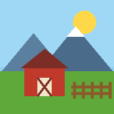

Bizim Yayla · Gizlilik Politikası
Son güncelleme: 25 Kasım 2026 · VortexApp Technology GroupKısaca: Bizim Yayla seninle ilgili hiçbir kişisel veri toplamaz, bir sunucuya göndermez, satmaz ve kimseyle paylaşmaz. Oyun kaydın yalnızca kendi cihazında durur.
1. Hangi veriler tutulur?
- Oyun kaydı: Çiftliğin, hayvanların, paran, verdiğin isimler (köy, şehir, hayvan adları) ve ayarların cihazının tarayıcı depolama alanında (localStorage) saklanır. Bu veriler cihazından çıkmaz.
- Yedek kodu: "Yedek kodu al" dediğinde oyun kaydın bir metne dönüştürülür. Bu metni nereye kopyalayacağına sen karar verirsin. Biz bu metni görmeyiz.
- Oyun konum, kamera, mikrofon, rehber, fotoğraf ya da benzeri hiçbir izin istemez ve kullanmaz.
- Oyunda reklam yoktur, reklam kimliği kullanılmaz, analiz ya da takip aracı bulunmaz.
2. Uygulama içi satın almalar
Mağazadaki satın almalar tamamen Google Play tarafından işlenir. Ödeme bilgilerine (kart, fatura vb.) erişimimiz yoktur. Oyun yalnızca satın aldığın ürünün kimliğini (ör. "kese_buyuk") alır ve oyun içi ödülü hesabına ekler. Google'ın kendi gizlilik politikası için: policies.google.com/privacy
3. İsteğe bağlı Google Drive yedeği
Bu özellik açıksa ve sen "Google ile bağlan" dersen, oyun kaydın kendi Google Drive hesabının gizli uygulama klasörüne (appDataFolder) yazılır. Oyun yalnızca kendi oluşturduğu bu dosyayı görebilir, Drive'ındaki diğer dosyalara erişemez. Bu dosya bize gönderilmez. Bağlantıyı istediğin zaman Google hesap ayarlarından kaldırabilirsin.
4. İnternet bağlantısı
Oyun ilk açılışta 3D modelleri ve oyun motorunu (three.js) internetten indirir, sonra cihazına önbelleğe alır. Bu indirmeler sırasında, internetteki her bağlantıda olduğu gibi, dosyanın indirildiği sunucu (ör. GitHub Pages, jsDelivr) teknik olarak IP adresini görebilir. Biz bu kayıtlara erişmeyiz ve kullanmayız.
5. Çocuklar
Oyun herkese uygundur ve 13 yaşın altındaki çocuklardan bilerek hiçbir veri toplamaz. Zaten hiç kimseden kişisel veri toplanmaz.
6. Verilerini silmek
Oyundaki tüm verilerini silmek için: Telefon → ⚙️ Ayarlar → Yeni oyun, ya da Android ayarlarından uygulamanın verilerini temizle veya uygulamayı kaldır. Google Drive yedeğini açtıysan, Drive'ın Ayarlar → Uygulamaları yönet bölümünden Bizim Yayla'nın gizli verilerini silebilirsin.
7. Değişiklikler ve iletişim
Bu politika değişirse güncel hâli bu sayfada yayınlanır. Sorularını şu adrese yazabilirsin:
[İLETİŞİM E-POSTASI]
Privacy Policy (English)
Last updated: 25 November 2026 · VortexApp Technology Group
Bizim Yayla does not collect, transmit, sell or share any personal data. Your save game (farm, animals, money, names you choose and settings) is stored only on your device (browser localStorage). The game requests no permissions (location, camera, microphone, contacts, photos), shows no ads and contains no analytics or tracking.
In-app purchases are processed entirely by Google Play; we never see your payment details. The game only receives the purchased product ID to grant the in-game item.
Optional Google Drive backup: if enabled and you choose to connect, your save is written to the hidden app-data folder of your own Google Drive. The game can access only that file, and it is never sent to us.
On first launch the game downloads its 3D models and engine from the internet and caches them; the hosting servers may technically see your IP address, which we neither access nor use. Delete all data via Phone → Settings → New game, by clearing the app's data, or by uninstalling. Contact: [CONTACT E-MAIL]